I am an incoming Master's Student at the NYU Courant Institute. I have a passion for computer Vision, computer graphics, marine Ecology, and photography. My research attempts to bring the rapid innovation of the computer science community to applied fields, such as marine ecology. In my 4 years at the Aircraft Center for Earth Studies with Dr. Chirayath, I worked towards this mission through the development of novel methods to monitor marine life with drones. Specifically, I focused on seafloor mapping, animal survey tools, and whale health assessment. I am currently focusing my efforts on 3D reconstruction and inverse rendering. Here, you can find information about my research experience and personal projects.
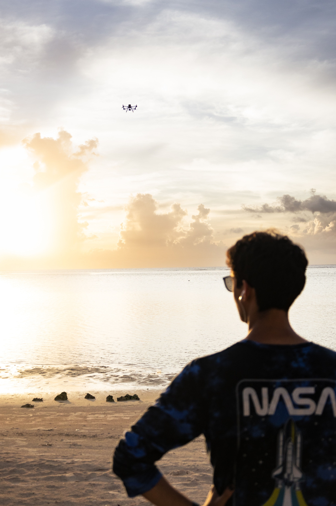
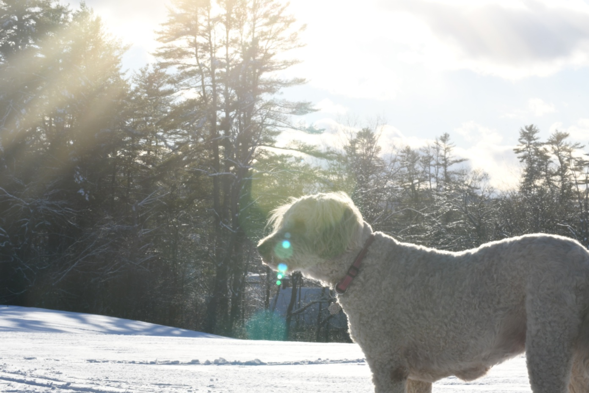
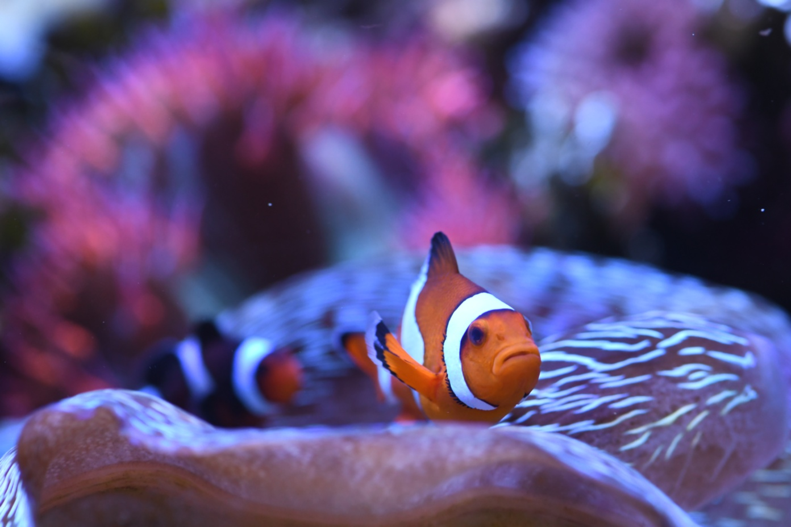
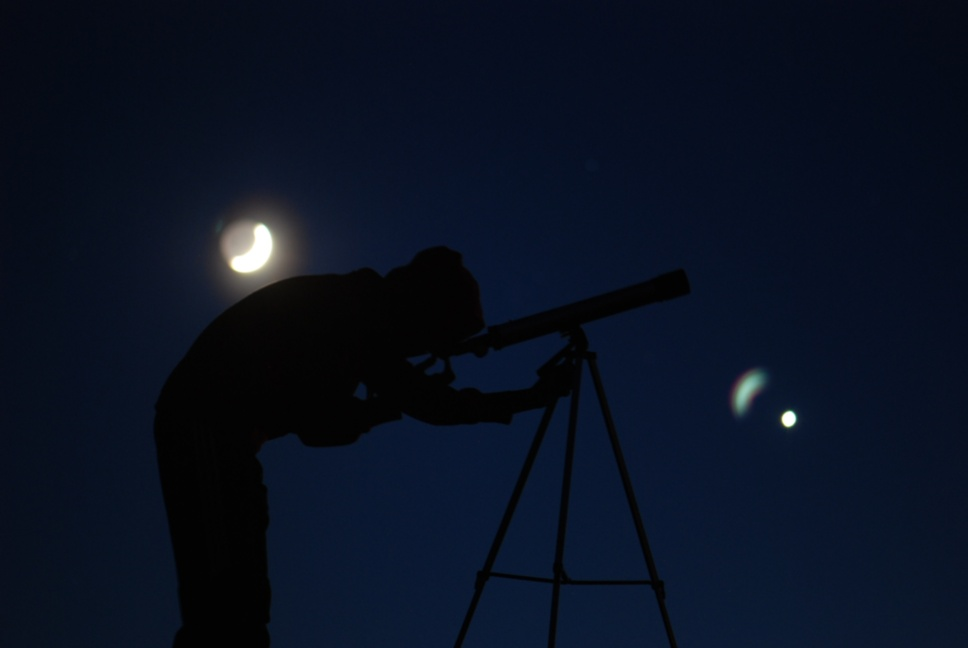
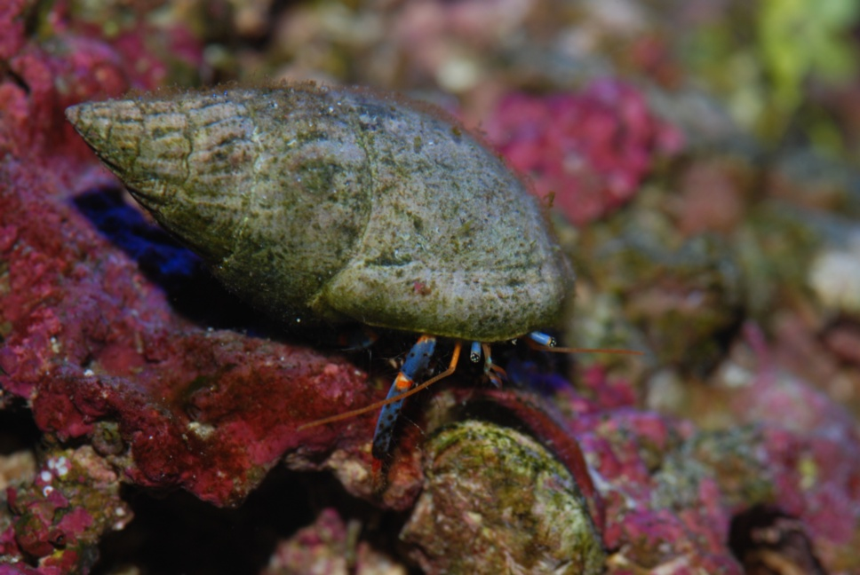
I worked as a software engineer at the Aircraft Center for Earth Studies at the University of Miami under Dr. Ved Chirayath's advisorship for 4 years. The background image of this section is a result from our Animal Detector. Silhouettes of detected animals are cut out and placed on top of the resolved benthic map from Fluid Lensing. This data was collected from Piti Bomb Holes, Guam, in the summer of 2022.
We present the first general-purpose animal detector for UAV footage of the ocean. This technology isolates persistent anomalies in raw videos, leveraging a resolved image of the seafloor (created using Fluid Lensing). This method allows for the detection of any moving object in the data; however, we prioritize high confidence detections based on consistent size and movement speed, as well as the signal's lifetime. We employ novel filtering techniques to remove many wave artifacts. The constraints on the system may lead to many missed detections in difficult conditions, so we argue that our tool is best used as a starting point for future methods that could train on our results.
The view of the seafloor from an aerial drone is greatly distorted by the air-sea interface.
With Fluid Lensing, we try to eliminate as many of these distortions as possible to study the state
and health of the seafloor.
Historically, Fluid Lensing attempted to estimate wave shape through periodicity; however, these
techniques were costly and
greatly constrained by conditions.
In my time at ACES, I created a new version of Fluid Lensing that uses iterative image alignment and
statistical integration to achieve similar results, but at the scale of entire reefs. Part of this
efficiency is also due to a scheduler that dynamically allocates CPU and GPU compute to accelerate the
process.
With my software, our team generated over 40 novel maps of over 12 reefs.
On the right, you can see a
demonstration of
our data viewer, which showcases most of the maps we created. In this demo, we show a timeseries of a
reef at unprecedent time-resolution.
This data was collected at Piti Bomb Holes, Guam, by Jonelle Sayama. You can click
on the video to visit the data-viewer.
Raw Frames
Average
Fluid Lensing
Here are papers that leverage this software I wrote for maps:
I created a novel type of software targeted at making maps of the sea surface (or any flat plane). It leverages targets of opportunity at the sea surface to make maps without the use of expensive structure-from-motion, which often fails on the sea surface. Instead, the software tracks and compares the position of targets of opportunity (mouring buoys) to the GPS coordinates given by a DJI Mavic 3E to create a mapping between GPS coordinates and pixels. This can be used as a sort of camera pose estimation for blending images, as if they were a single image focused on the sea surface (similar to a synthetic aperture).
Refraction breaks the assumptions of many structure-from-motion solvers. Publicly available refractive solvers are usually designed for correcting distortions created from refraction at the camera lens, not at the sea surface. Here, we attempt to create a refractive solver for drones, where the main refractive event occurs at the air-sea interface. We use a ray-based optimization framework to estimate scene parameters, such as drone altitude above water, camera pose estimation, and geometry triangulation. We have tested this technology on synthetic data (top right), benthic data (bottom right), and in a casual structure-from-motion framework for animals. So far, this framework is designed for nadir-pointing cameras. This section is abridged, as it is ongoing work. Please contact me for more information!
The ACES lab works on MIDAR, a multispectral technique to actively map marine ecosystems. MIDAR can also be used for optical communications. Here is a demo of a custom encoding and decoding method that I created. Near the end of the video, the transmitter and receiver become desynchronized, so the decoded signal becomes slightly garbled.
I interned in Professor Robert Hill's Neurobiology Lab at Dartmouth College for three summers. My first summer, I learned the ins and outs of the wet lab. In my free time, I created a GPU-accelerated denoising algorithm that isolates oligodendrocytes from image artifacts by their linear morphology. This algorithm typically takes a few seconds to run and is fairly accurate, although it requires some user input to make sure the program is using the correct weights for the image.
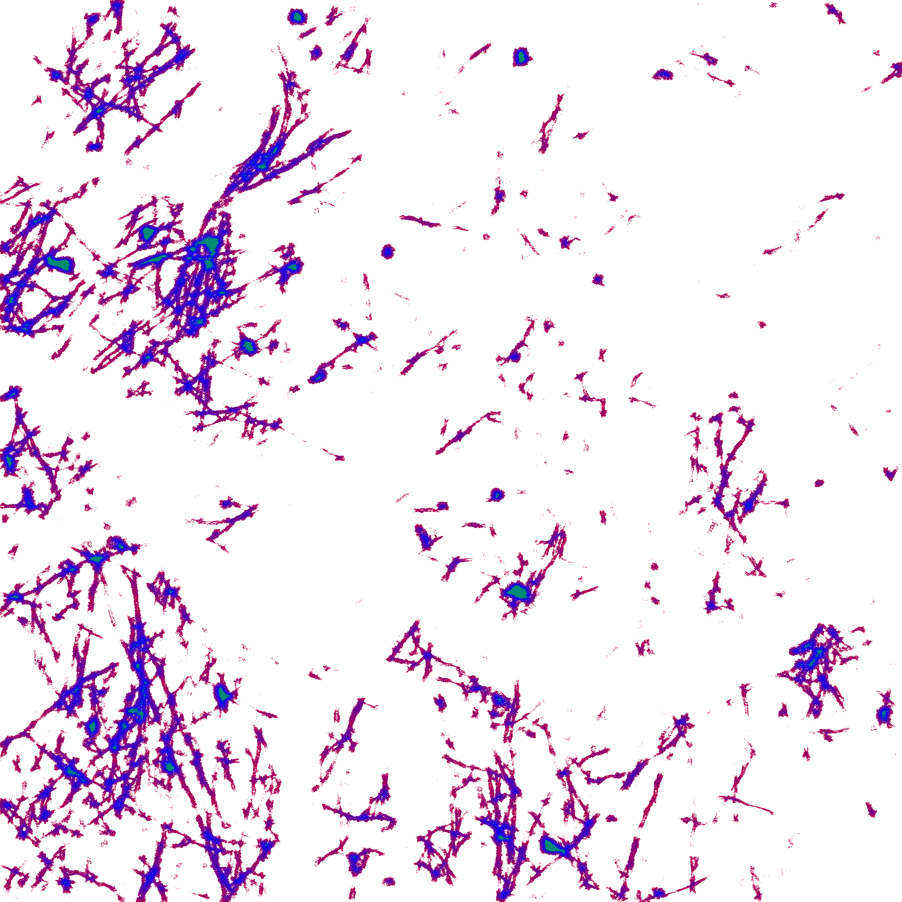
While my second summer in Professor Hill's lab was entirely remote, I was able to leverage my computer science background and get to work. I took on the task of optimizing the process of tracing oligodendrocytes, a time-intensive quantification of oligodendrocyte behavior and activity. I first looked into various VR tools like Vaa3D and Agave, but neither of these tools were accurate enough for our tasks. By the end of the summer, I essentially rewrote an industry standard tracing software (Simple Neurite Tracer) to run entirely on the GPU for better performance.
I spent much of the first two years of my undergrad in the Cornell AppDev project
team. I worked for multiple semesters as a developer, where I worked on their flagship app "Eatery", as well
as some exploratory projects. Most of my impact was from reviewing other people's code, as I was quick to
take on more of a mentorship role.
I was later voted to co-instruct the Introduction to
iOS
Development course, which is offered through the Cornell Computer Science department, with my lovely partner
Justin Ngai. We thoroughly redesigned the course with a focus on both accessibility, facilitating student-TA
interactions, and a core understanding of language principles, instead of the course's original focus on
just enough to publish apps.
On the right is a demo of the first project I ever built in Swift; I attempted
to create a set
of miscellaneous utilities that my phone was lacking, but it was largely an exercise in layout and
learning Swift (2017).
I based it on Let's Build That App's YouTube Series.
I never finished the project, but it was
a great learning tool, and it's a cute reminder of how far I've come!
As you will see below, I have had quite a number of endeavors into graphics (with many more to come). These projects require quite a lot of boilerplate to get going, and I have wasted too much time getting basic things to work instead of playing around with fun concepts. So, I built a project with as much abstraction as possible, so that I can re-use boilerplate and get right into the meat of a problem. In addition to graphics boiler-plate, this project also includes input management, input animation, and image-capture for recording crispy videos. I could switch to Unity and get significantly better input control (without animations), which I will probably do rather soon. But for now, I have had a blast writing code with MetalKit. Below, you will see a video I compiled that is a summary of my endeavors into fun coding projects. Leading up to the title sequence is a montage of a bunch of projects I have done over the years. In conjunction with Graphics Hub, I also built a Hackintosh. This allowed me to really delve into the world of graphics, and everything after the title sequence is something I recorded using Graphics Hub. Enjoy!

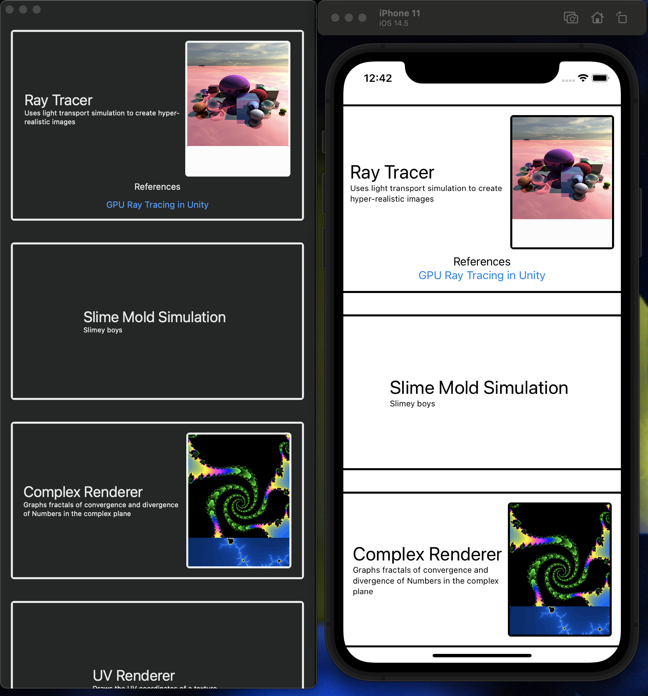
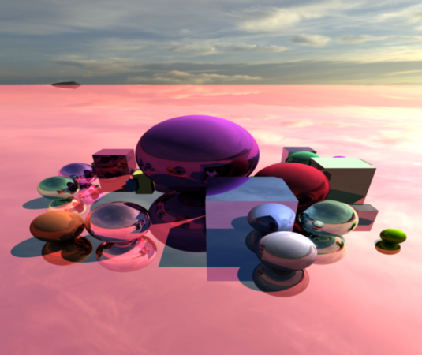
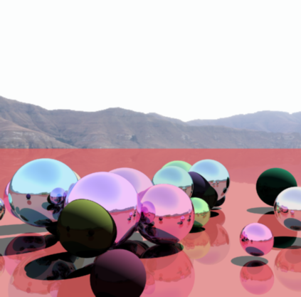
This was one of many projects inspired by Sebastian Lague's YouTube videos. Ray tracing was one of my first forays into GPU programming, and I had to teach myself quite a bit of linear algebra for this project–this was how I filled my senior year of high school during COVID. I later studied photorealistic rendering in a class taught by Steve Marschner. The videos at the top are fun visualizations I built after this class, showing light manifolds through correlated noise and a CPU-GPU hybrid implementation of the Kelemen flavor of the Metropolis light transport algorithm.
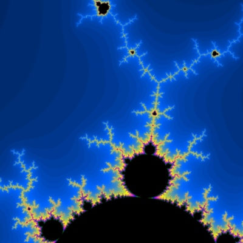
Many of the photos on this website are from this original project! I have, of course, revisited it since and made it much easier to use.
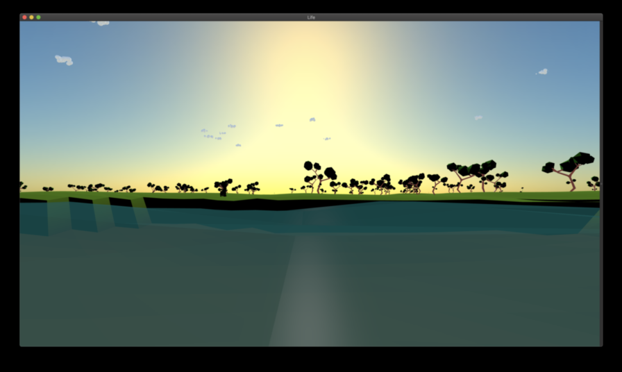
This was a school project that a friend and I made for March Intensive (essentially a project week). Inspired by Sebastian Lague and Primer's exploration of evolution through ecosystem simulations, we set out to make our own rendition. The goal was to build a fully functioning ecosystem that could be used as a model for population dynamics. We used SceneKit for our game engine and Blender for modeling.
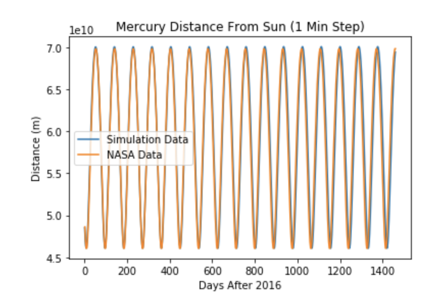
I decided to make a solar system for my final project in my physics class. Using the Runge-Kutta Method as well as scraping information from two NASA website, I was able to peform 2D and 3D simulations. These simulations worked really well, averaging 1% error over quite lengthy simulations, but they slowly diverged from the projections. This was probably due to rounding errors in the data and program. I had a blast doing this project, and I will definitely revisit it in the future!